Configuration reference
This page documents the config file and every segment it can contain. Each entry lists the segment's options with their types and defaults, followed by examples. Each example pairs a screenshot with the JSON that produced it. Segments with several options have a minimal example and one that sets every option.
The config file
On first run superline writes a default config to ~/.config/superline/config.json. Changes
take effect on the next prompt. superline config opens the file in
$EDITOR, and superline show --config <path> renders any other file.
| Key | Type | Default | Description |
|---|---|---|---|
theme | string | "rainbow" | "rainbow", "simple", or a path to a theme file. |
rows | array | required | The prompt's rows, top to bottom. |
update.disable | boolean | false | Stop the once-a-day check for a newer release and the notice it prints above the prompt. |
Every module can be written as a bare string or as an object with options, so "git" and
{ "git": {} } mean the same thing. Modules with required options must use the object form.
Rows
Each row has a required left array and an optional right array of segments.
Every row but the last is printed in full. The last row's right side is drawn by the
shell's own right prompt (fish_right_prompt, zsh's RPS1, nushell's
PROMPT_COMMAND_RIGHT), so it stays in place while you type. Bash and PowerShell have no right
prompt, so on those shells the last row's right isn't shown.
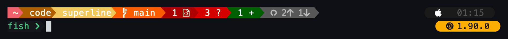
{
"theme": "rainbow",
"rows": [
{
"left": [
{ "cwd": { "max_length": 40, "wanted_seg_num": 3 } },
"git"
],
"right": [
{ "separator": "round" },
"os",
{ "time": { "format": "%H:%M" } },
{ "padding": 0 }
]
},
{
"left": ["shell", "cmd"],
"right": [
{ "separator": "round" },
"cargo",
{ "padding": 0 }
]
}
]
}Layout
Layout segments control how other segments are grouped and joined. They can appear anywhere in a left or right array.
separator
Sets the shape drawn between segments. It applies to every following segment on the same side until
another separator changes it.
| Value | Type | Default | Description |
|---|---|---|---|
separator | string | "chevron" | "chevron", "round", or "none" for no glyph at all. |
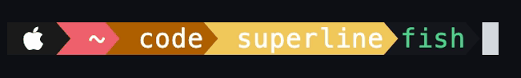
{
"left": [
{ "separator": "chevron" },
"os",
{ "cwd": { "max_length": 40, "wanted_seg_num": 3 } },
"shell"
]
}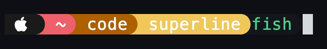
{
"left": [
{ "separator": "round" },
"os",
{ "cwd": { "max_length": 40, "wanted_seg_num": 3 } },
"shell"
]
}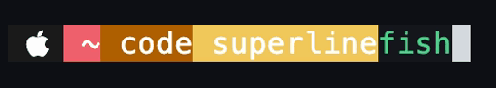
{
"left": [
{ "separator": "none" },
"os",
{ "cwd": { "max_length": 40, "wanted_seg_num": 3 } },
"shell"
]
}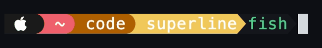
{
"left": [
"os",
{ "separator": "round" },
{ "cwd": { "max_length": 40, "wanted_seg_num": 3 } },
{ "separator": "chevron" },
"shell"
]
}small_spacer / large_spacer
Blank segments with a black background, drawn as part of the current block. They take no options.
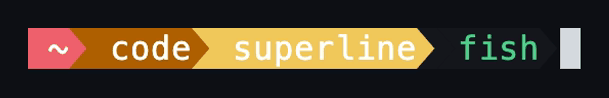
{
"left": [
{ "cwd": { "max_length": 40, "wanted_seg_num": 1 } },
"small_spacer",
"shell"
]
}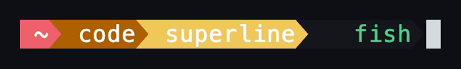
{
"left": [
{ "cwd": { "max_length": 40, "wanted_seg_num": 1 } },
"large_spacer",
"shell"
]
}padding
Ends the current block and clears the background. The next segment starts a new block with a reversed
separator. 0 is common at the end of a right array to close the last block.
| Value | Type | Default | Description |
|---|---|---|---|
padding | integer | required | Width of the gap in cells. |
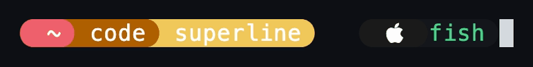
{
"left": [
{ "separator": "round" },
{ "padding": 1 },
{ "cwd": { "max_length": 40, "wanted_seg_num": 1 } },
{ "padding": 3 },
"os",
"shell",
{ "padding": 0 }
]
}Path & prompt
cwd
The current directory, one segment per path component, with your home directory shown as
~. Once the path is longer than max_length characters and deeper than
wanted_seg_num components, it's cut down to wanted_seg_num components: the
first half, then ..., then the rest.
| Option | Type | Default | Description |
|---|---|---|---|
max_length | integer | required | Characters (after ~) before the path is shortened. |
wanted_seg_num | integer | required | Components to keep once it is. |
resolve_symlinks | boolean | false | Show the resolved path instead of the path used to reach the directory. The example below sits in ~/work/current, a link to a deep directory. |
{ "cwd": { "max_length": 60, "wanted_seg_num": 5 } }{
"cwd": {
"max_length": 30,
"wanted_seg_num": 2,
"resolve_symlinks": true
}
}read_only
A lock icon, shown when the current directory is not writable. No options. Themed as readonly.
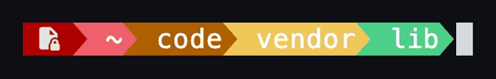
{
"left": [
"read_only",
{ "cwd": { "max_length": 40, "wanted_seg_num": 2 } }
]
}cmd
The prompt character before your input. After a failed command it turns red and shows the exit code.
No options; the symbol comes from the theme's cmd.user_symbol.
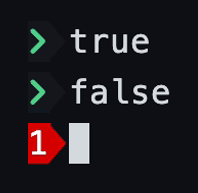
"cmd"last_cmd_duration
How long the previous command took, shown only when it ran for at least min_run_time.
| Option | Type | Default | Description |
|---|---|---|---|
min_run_time | integer | required | Threshold in milliseconds. The default config uses 50. |
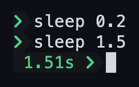
{
"left": [
{ "last_cmd_duration": { "min_run_time": 500 } },
"cmd"
]
}shell
The name of the running shell: fish, zsh, bash, pwsh or nu. No options.
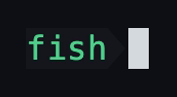
"shell"jobs
A gears icon and the number of running background jobs owned by this shell, hidden when there are none. Stopped jobs aren't counted, since some shells keep them in the job table indefinitely. No options.
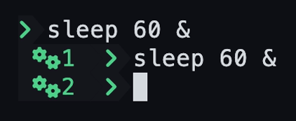
{ "left": ["jobs", "cmd"] }Git & GitHub
git
The branch, then modified, untracked and staged counts, then commits ahead of and behind the upstream. A GitHub logo appears when the repo has a remote and links to its web page. A detached HEAD shows the short hash, followed by the branch it's the tip of, if any.
Status collection waits up to status_timeout_ms. If it takes longer, the last cached result
is shown while a refresh finishes in the background; before anything is cached the segment says
loading….
| Option | Type | Default | Description |
|---|---|---|---|
status_timeout_ms | integer | 250 | How long to wait for a fresh status before falling back to the cache. |
backend | string | "auto" |
"cli" runs git, the fastest option on big trees since it's the only one that uses git's untracked cache and fsmonitor.
"gitoxide" reads the repo in-process and needs no git binary.
"auto" picks by the size of .git/index, and uses gitoxide when git isn't on your PATH.
|
"git"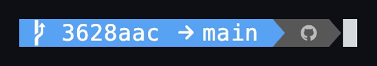
{ "git": { "status_timeout_ms": 500, "backend": "cli" } }pr
A clickable link to the current branch's pull request, looked up through the
gh CLI. Its colour shows the state: draft, open,
merged or closed. The lookup runs in the background and is cached, so the link appears on a later
prompt once it's ready. It's skipped on main, master and develop.
| Option | Type | Default | Description |
|---|---|---|---|
status | boolean | true | Add a dot for CI while the PR is open: green passing, yellow pending, red failing. |
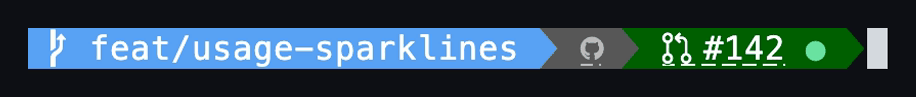
{ "left": ["git", "pr"] }{ "left": ["git", { "pr": { "status": false } }] }Languages
python, node, java and cargo each show their logo when
the current directory belongs to a project, and add the version when one is pinned.
Versions come first from mise configs (mise.toml,
.mise.toml, .config/mise/config.toml, .tool-versions and their
.local variants), searched upwards from the current directory. A mise version beats one from
a language-specific file, and is marked with a tools icon (Nerd Font md-tools, U+F1064), which themes can change or hide with each
module's mise_icon. The global mise config in $HOME is ignored, so a global
pin doesn't make the modules appear in every directory.
python
Detects an active virtualenv (venv, conda or mamba), or a directory with a .python-version
or pyproject.toml. Inside a venv the version is the interpreter the env was built from, read
from pyvenv.cfg or conda-meta. Outside one it's the pinned version. Also
accepted as python_env.
| Option | Type | Default | Description |
|---|---|---|---|
version | boolean | true | Show the Python version. |
venv | boolean | true | Show the active env's name. |
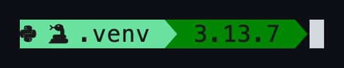
"python"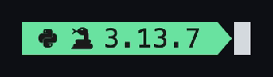
"python"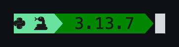
{ "python": { "version": true, "venv": false } }node
Detects the version nvm has activated, a mise pin, or an .nvmrc. A version that only comes
from .nvmrc gets a darker background, since nothing has activated it. Also accepted as
nvm.
| Option | Type | Default | Description |
|---|---|---|---|
version | boolean | true | Show the Node version. |
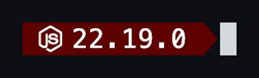
"node"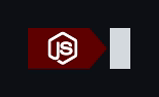
{ "node": { "version": false } }java
Detects a mise pin, or the .sdkmanrc that sdkman's auto-env has exported for the current
directory (through SDKMAN_ENV). Shows the major version and the JDK distribution. Also
accepted as sdkman.
| Option | Type | Default | Description |
|---|---|---|---|
version | boolean | true | Show the major version. |
jdk | boolean | true | Show the distribution (Temurin, Corretto, ...). |
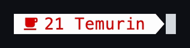
"java"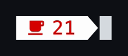
{ "java": { "version": true, "jdk": false } }cargo
Detects a Cargo.toml in the current directory. The version is a mise pin, or the channel from
rust-toolchain.toml (or the legacy rust-toolchain), searched upwards as rustup
does so workspace members pick up the root's pin.
| Option | Type | Default | Description |
|---|---|---|---|
version | boolean | true | Show the toolchain version. The mise marker stays either way. |
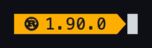
"cargo"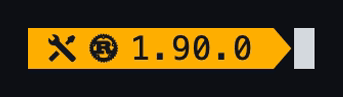
"cargo"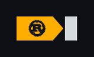
{ "cargo": { "version": false } }AI usage
ai_usage
Claude or Codex subscription usage, read through the provider's CLI on your PATH. It's
refreshed in the background and cached, so rendering never waits on the provider. Add the module more
than once to show both providers, or the same one in different styles.
Until the first reading is cached it shows …. If the CLI isn't installed it shows
?, and if it's installed but logged out it shows a logged-out user icon.
| Option | Type | Default | Description |
|---|---|---|---|
provider | string | required | "claude" or "codex". |
session | boolean | true | Show the five-hour window. |
weekly | boolean | true | Show the seven-day window. |
fable | boolean | false | Show Claude's weekly Fable window. Ignored for Codex. |
display | string | "percentage" | How each window is drawn; see the styles below. |
threshold | number | none | Percent used at which the whole widget switches to the theme's ai_usage.threshold_bg. Any visible lane counts, credits included. |
session_label | string | "5h " | Labels for each window. The spaces keep adjacent windows apart; "" drops the label. |
weekly_label | string | " 7d " | |
fable_label | string | " F " | |
credits | boolean | false | Add a lane for usage credits: dollars against the limit for Claude, a per-seat count for Codex. |
credits_display | string | follows display | Any display style, or "numeric" for raw figures such as $12.50/$50. |
credits_label | string | " C " | Label for the credits lane. |
credits_only_when_limited | boolean | false | Show credits only once a window has hit 100%, which is when the provider starts spending them. |
session_time_remaining | boolean | false | Show a countdown to the five-hour window's reset. |
session_time_remaining_only_at_limit | number | 0 | Fraction from 0 to 1: only show the countdown once the session is at least this full. 0.8 shows it from 80%. |
| Display style | Also accepted | Looks like |
|---|---|---|
"percentage" | percent, pct | 5h 61% |
"bar" | bars | 5h ▄▄▄▁▁ |
"capped_bar" | capped | 5h ▗▄▄▄▁▁▖ |
"block" | blocks | 5h ███░░ |
"sparkline" | spark | 5h ▅ |
"numeric" | num | Raw figures for credits; same as percentage for windows. |
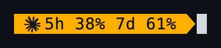
{ "ai_usage": { "provider": "claude" } }{ "ai_usage": { "provider": "codex", "display": "sparkline" } }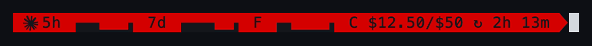
{
"ai_usage": {
"provider": "claude",
"session": true,
"weekly": true,
"fable": true,
"display": "capped_bar",
"threshold": 60,
"session_label": "5h ",
"weekly_label": " 7d ",
"fable_label": " F ",
"credits": true,
"credits_display": "numeric",
"credits_label": " C ",
"credits_only_when_limited": false,
"session_time_remaining": true,
"session_time_remaining_only_at_limit": 0
}
}System
os
An icon for the operating system family: Linux, macOS, Windows, Android or one of the common BSDs. The family is fixed when superline is compiled, so no lookup happens at render time. No options.
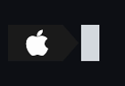
"os"memory_usage
RAM usage as a percentage, with swap alongside once it's at least 1% used. The reading is a local system call, so it is not cached. Available on Linux, macOS and Windows.
| Option | Type | Default | Description |
|---|---|---|---|
threshold | integer | none | Hide the segment below this percentage. Without it, it's always shown. |
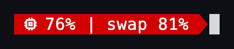
"memory_usage"
{ "memory_usage": { "threshold": 10 } }time
The current time.
| Option | Type | Default | Description |
|---|---|---|---|
format | string | "%H:%M:%S" | A strftime format string. |
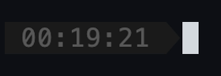
"time"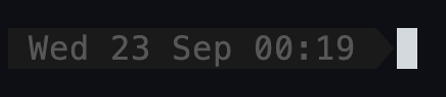
{ "time": { "format": "%a %d %b %H:%M" } }text
Literal text in the theme's default colours. Unicode and punctuation are kept. Control characters and line breaks are shown as visible escapes, and shell prompt syntax is quoted, so a config value can't inject anything into the prompt.
| Value | Type | Default | Description |
|---|---|---|---|
text | string | required | The text to show. |
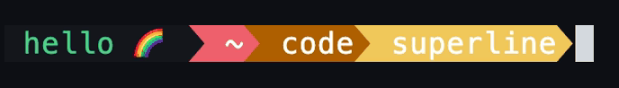
{
"left": [
{ "text": "hello 🌈" },
{ "cwd": { "max_length": 40, "wanted_seg_num": 1 } }
]
}username, hostname, local_ip
The current user (in the root colour when running as root), the machine's hostname, and its primary
non-loopback IPv4 address, read from the network interfaces without opening a socket. They take no
options. "user", "host" and "localip" still work as older
spellings. No screenshots are shown for these, since they would expose details of the machine that took them.
{ "left": ["username", "hostname", "local_ip"] }battery
A low-battery warning with the charge and charging state. It appears only at 10% or below, and stays hidden on machines without a battery. No options.
"battery"sudo
Shows a key symbol (U+26BF) while your sudo credentials are cached. The check is non-interactive
(sudo -Nnv) and runs in the background, so it never prompts for a password or extends the
sudo timestamp. Because of that, the marker can linger for up to ten seconds after the credentials expire. No options.
"sudo"Themes
theme is "rainbow", "simple", or a path to a theme file. Paths
starting with / are absolute; anything else is relative to the config directory. If a
custom theme fails to load, superline falls back to rainbow.
A theme file has defaults, the fg and bg for anything a module
doesn't set, and modules, per-module overrides. Most modules take fg and
bg; some have more (git has staged_bg, cwd takes a
bg_colors list, cmd has user_symbol). Colours are a name from
src/colors.rs or an ANSI 256-colour code from 0 to 255.
example_theme.json
covers every module.

{
"defaults": { "fg": 153, "bg": 235 },
"modules": {
"cwd": {
"path_fg": 255,
"bg_colors": [23, 24, 25, 31, 37, 38]
},
"git": {
"clean_bg": 30,
"clean_fg": 255,
"dirty_bg": 61,
"dirty_fg": 255,
"notstaged_bg": 97,
"notstaged_fg": 255,
"untracked_bg": 133,
"untracked_fg": 255,
"staged_bg": 29,
"staged_fg": 255,
"remote_bg": 238,
"remote_fg": 250
},
"cargo": { "fg": 255, "bg": 67 },
"cmd": {
"passed_fg": 81,
"failed_bg": 161,
"failed_fg": 255,
"user_symbol": "λ"
}
}
}Used with { "theme": "theme.json", ... } next to config.json.
Commands
| Command | What it does |
|---|---|
superline install <shell> | Append the prompt loader to the shell's config file. Safe to run more than once. |
superline init <shell> | Print the loader snippet instead. |
superline config | Open the config file in $EDITOR. |
superline clear-caches | Wipe cached git status, PR lookups and AI usage so the next prompt starts cold. |
SUPERLINE_DEBUG=1 | Print a per-module timing report to stderr after each render. |